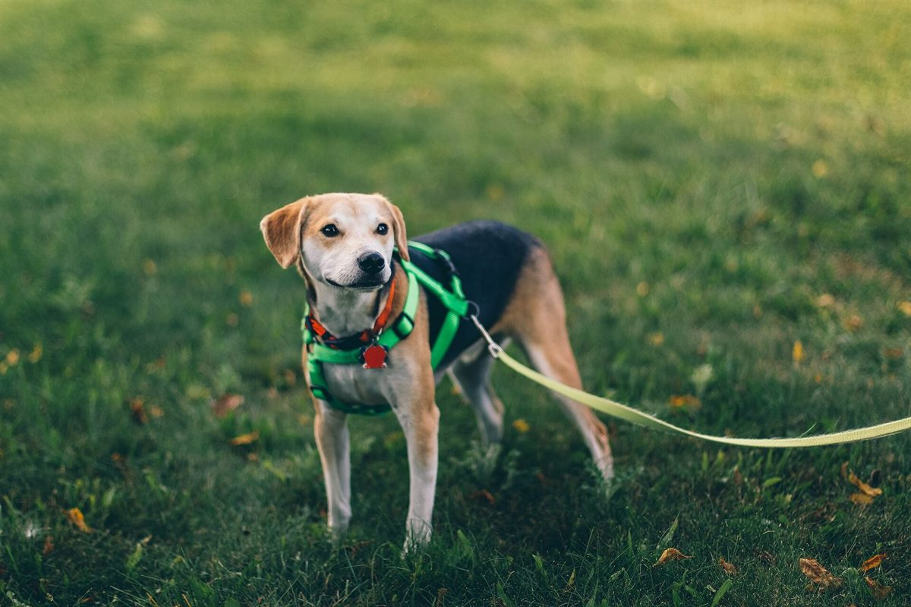
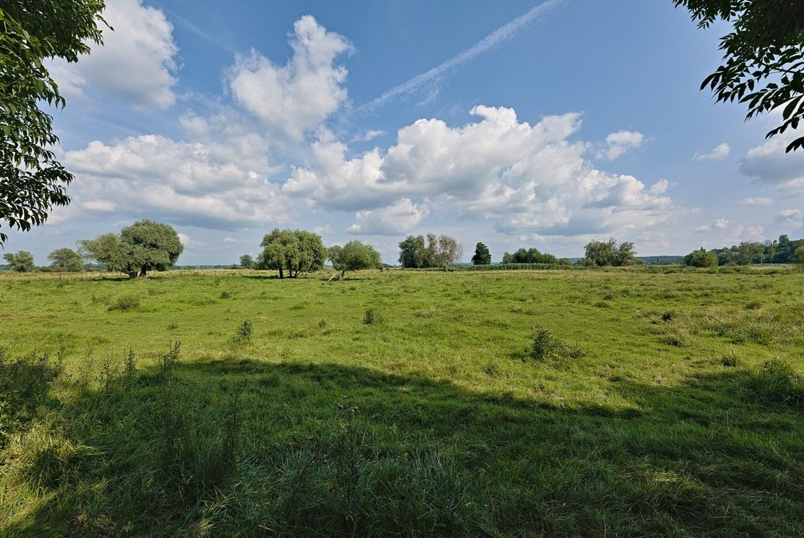
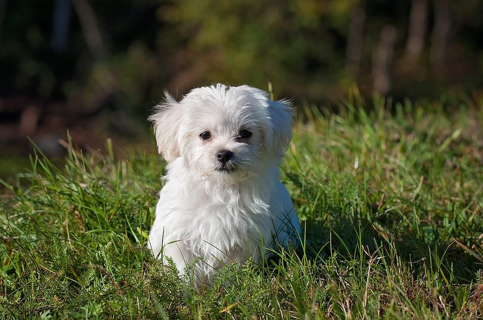

お店について
ABOUT
北軽井沢の静かな一角にある Cafe Fata は、ワンちゃんと一緒に入れるカフェです。店内にワンコ同伴OKで、敷地にはドッグランもあります。
席からは、夏には緑の草原になる牧歌的な景色が広がります。ごはんは黒板のメニューから選ぶスタイルで、黒板にはお店の白いウェスティ(ウエスト・ハイランド・ホワイト・テリア)のイラストが描かれていると紹介されています。
お店はオーナーさんがおひとりで切り盛りされ、お料理好きの手づくりの味が楽しめます。雑貨も店内に飾られています。
※ 店名の由来・意味は公開情報では確認できませんでした。このページでは断定せず、制作側のイメージとして「草原と犬のいる穏やかな時間」をテーマにしています。


